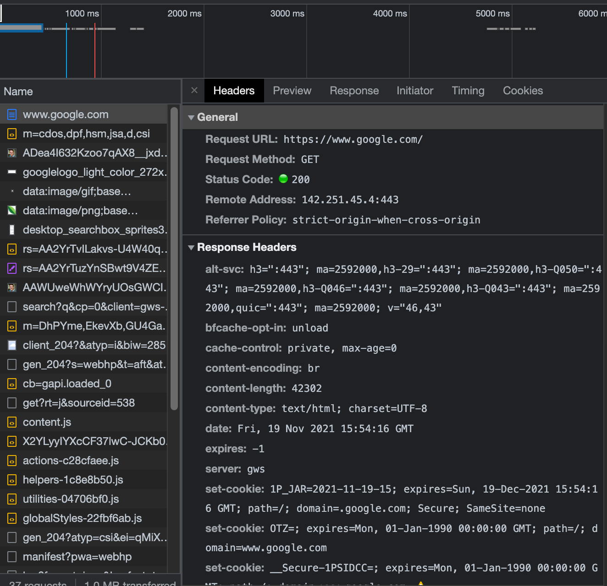

9 Computer Networks and the Internet
Over the last few chapters, you’ve gotten comfortable setting up a server, accessing it using SSH, and doing basic administrative tasks on the server. But if you worked through the lab in the last chapter, the only way to access the server was to SSH tunnel into the server and get to the GUI on localhost.
If you’re really just running a server for yourself, that may be fine. But if you’re running a server that’s for your colleagues, or where you want to host an app to share with other people, you’ll need to be able to access it directly over HTTP(S) and you’ll probably want to host it at a real, memorable, URL.
In this chapter, we’ll delve into how information finds its way to the right spot in a computer network and how to configure your server so that it’s accessible to other people over the internet. Lastly, we’ll add the simplest and most basic level of security for your server – SSL/HTTPS.
9.1 Basics of Computer Networking
These days, many or even most of the things we want to do involve sending data across computer networks. When you visit a website, wirelessly print a document, or login to your email, you are making use of a computer network.
The computer network we’re all most familiar with is the biggest of them all – The Internet. But there are myriad other networks, like the very small private network of the devices (phones, computers, TVs, etc) connected to your home wifi router, to the somewhat larger VPN (which stands for virtual private network) you might connect to for school or work.
A computer network is a set of computers that can communicate with each other to send data. These networks are basically self-similar – once you understand the wifi network in your house, you’ve also got a reasonably good understanding of how the entire internet works, which is great if you’re an author trying to explain how this all works.
Luckily for me, the way computer networks function is pretty easily explainable by some analogies to the real world. Let’s imagine you have a penpal, who lives in an apartment building across the country.1
First off, you write your letter – full of the latest news and juicy gossip for your pal. Then, you put this letter inside an envelope, address the letter to the right spot, and put it in the mail.
When the mail carrier picks it up, they deliver it to a local processing facility. Based on the state and zip code, it gets routed up to centralized processing facilities and then back down to regional processing facilities, local processing facilities, into the mailbag of the carrier who goes to your friend’s house, and the carrier delivers it right to your friend’s door.
This process is basically the same as what happens when your computer sends data to another in a process calls packet switching.
Computer networks are build on layers and layers of protocols. A protocol defines what is valid for a computer to say. For example, the contents of the envelope are defined by an application layer protocol, which defines a valid message for your computer to communicate with the other.
Just as you and your friend could communicate in any number of human languages, computers can communicate using any of dozens of application layer protocols. In the case of normal web communication, the application layer protocol is http.
Once your computer has composed the valid http message, it’s put into a small bundle called a packet, addressed to the right place, stamped with a return address, and sent on its way.2 The protocol that defines a valid address, packet type and size, and more is called TCP/IP.
Once the packet leaves your computer, it starts traveling up to centralized facilities for routing network traffic, and then back down to more local ones. The pieces of hardware or software doing this traffic directing are called routers.
Somewhere, your traffic is headed for a server, which has an identified called an IP Address, which is analogous to the physical address of your friend’s apartment building. Once it gets there, it has to be sent up to the right apartment, which is indicated by the port.
Meanwhile, your computer is waiting for a response from the server. Once the server has a response to send, it comes back using the same technique. Obviously a huge difference between sending a letter to a penpal and using a computer network is the speed. Where sending a physical letter takes a minimum of days, sending and receiving packets over a network is so fast that the delay is imperceptible when you’re playing a multiplayer video game or collaborating on a document online.
We’ll spend a little more time getting into each of these layers to give you a good mental model of how all these layers of protocols fit together, and then move on to some hands-on work on our server.
9.2 Application Layer Protocols define valid messages
If we think of the TCP/IP protocol defining valid addresses, package sizes and shapes, and how the mail gets routed, then application layer protocols are one layer down – they define what are valid messages to put inside the envelope.
There are numerous application layer protocols. Some you will see in this book include SSH for direct server access, (S)FTP for file transfers, SMTP for email, LDAP(S) for authentication and authorization, and websockets for persistent bi-directional communication – used for interactive webapps created by the Shiny package in R and the Streamlit package in Python.
We’ll talk more about some of those other protocols later in the book. For now, let’s focus on the one you’ll spend most of your time thinking about – http.
9.2.1 http is the most common application layer protocol
Hyptertext transfer protocol (http) is the protocol that underlies a huge fraction of internet traffic. http defines how a computer can initiate a session with a server, request the server do something, and receive a response.
So whenever you go to a website, http is the protocol that defines how the underlying interactions that happen as your computer requests the website and the server sends back the various assets that make up the web page, which might include the HTML skeleton for the site, the CSS styling, interactive javascript elements, and more.
It’s worth noting that these days, virtually all
httptraffic over the internet is in the form of securedhttpstraffic. We’ll get into what thesmeans and how it’s secured in the next chapter.
There are a few important elements to http requests and responses:
Request Method – getting deep into HTTP request methods is beyond the scope of this book, but there are a variety of different methods you might use to interact with things on the internet. The most common are
GETto get a webpage,POSTorPUTto change something, andDELETEto delete something.Status Code - each HTTP response includes a status code indicating the response category. Some special codes you’ll quickly learn to recognize are below. The one you’ll (hopefully) see the most is 200, which is a successful response.
Response and Request Headers – headers are metadata included with the request and response. These include things like the type of the request, the type of machine you’re coming from, cookie-setting requests and more. In some cases, these headers include authentication credentials and tokens, and other things you might want to inspect.
Body - this is the content of the request or response.
- It’s worth noting that
GETrequests for fetching something generally don’t include a body. Instead, any specifics on what is to be fetched are specified through query parameters, the part of the URL that shows up after the?. They’re often something like,?first_name=alex&last_name=gold
- It’s worth noting that
9.2.2 Understand http traffic by inspecting it
The best way to understand http traffic is to take a close look at some. Luckily, you’ve got an easy tool – your web browser!
Open a new tab in your browser and open your developer tools. How this works will depend on your browser. In Chrome, you’ll go to View > Developer > Developer Tools and then make sure the Network tab is open.
Now, navigate to a URL in your browser (say google.com).
As you do this, you’ll see the traffic pane fill up. These are the requests and responses going back and forth between your computer and the server.
If you click on any of them, there are a few useful things you can learn.

At the top, you can see the timing. This can be helpful in debugging things that take a long time to load. Sometimes it’s helpful to see what stage in the process bogs down.
In the pane below, you can inspect the actual content that is going back and forth between your computer and the server you’re accessing including the request methods, status codes, headers, and bodies.
9.2.2.1 Special HTTP Codes
As you work more with http traffic, you’ll learn some of the common codes. Here’s a cheatshet for some of the most frequent you’ll see.
| Code | Meaning |
|---|---|
200 |
Everyone’s favorite, a successful response. |
3xx |
Your query was redirected somewhere else, usually ok. |
4xx and 5xx |
Errors with, respectively, the request itself and the server. |
| Particular Error Codes | |
400 |
Bad request. This isn’t a request the server can understand. |
401 and 403 |
Unauthorized or forbidden. Often means required authentication hasn’t been provided. |
404 |
Not found. There isn’t any content at the address you’re trying to access. |
504 |
gateway timeout. This means that a proxy or gateway between you and the server you’re trying to access timed out before it got a response from the server. |
9.3 Routers keep track of addresses
When you send a letter to your penpal, the letter carrier takes it back to the local post office at the end of their route. If you’re just sending a letter across town, the letter may be put right into a bin to go in a different carrier’s bag the next day. But if you’re sending a letter across the country, the letter will be delivered to a centralized sorting facility before eventually heading to a local post office and then into a different letter carrier’s bag.
This sorting and sending is exactly the job of routers in a computer network.
Routers keep track of two things – all the IP addresses it knows about, including both physical devices and sub-networks, and an upstream “default” address. When a packet gets to a router, it follows a very simple algorithm – if it knows where the address is, it sends the packet there. If not, it sends the packet to the default address.3
If you’re thinking about the wifi network in your house, your wifi router is keeping track of all the devices that are attached – your laptop, computer, smart speaker, and printer all have addresses that are tracked by the router.
So if you’re printing something from your laptop to the printer in the next room, the packets go to your router and then straight to the printer.
But if you’re sending an email, the packet is going to leave your house.
TODO: image of networks in tree
The default address of your home router is probably one owned by your internet service provider (ISP) for your neighborhood. So if your next door neighbor were running a public gaming server out of their basement (and they had the same ISP), the packets would probably just go to the router somewhere in your neighborhood and then back to your neighbor.
But that’s unlikely. More often, the local router will pass the packets to a router for a broader geographic area, and at some point to a router that isn’t specific to your ISP at all.
So your packet will get passed upstream to a sufficiently general network and then back downstream to the actual address you’re trying to reach.
This pattern of traffic getting routed up the tree of networks and then back down is helpful to have in mind as you’re thinking about how to make sure that your traffic gets where it needs to go.
9.3.1 More details about IP Addresses
IP addresses are, indeed, addresses. They are how one computer or server finds another on a computer network. We classify IP addresses into public and private addresses. A public address is one that is valid across the entire internet, while a private address is one that is valid only within a specific network.4
So unless you’ve configured it otherwise (and I wouldn’t recommend it for security reasons), your laptop doesn’t have a public IP address. Indeed, the only device in your home with a public IP address is probably your router. From the outside, everything in your house comes through that one IP address, and the router is responsible for making sure that your email gets to you and your roommate’s Netflix binge gets to them.
Most IP addresses you’ve probably seen before are IPv4 addresses. They’re four blocks of 8-bit fields (numbers between 0 and 255) with dots in between, so they look something like 65.77.154.233.
Since IP addresses are addresses, they have to be unique. For public IPs, that means they have to be unique across the entire internet. If you do the math, you’ll realize there are “only” about 4 billion of these. While we can stretch those 4 billion IP addresses to many more devices since most devices only have private IPs, we are indeed running out of public IPv4 addresses.
The good news is that we’re planning. In the last few years, adoption of the new standard, IPv6, has started. IPv6 addresses are eight blocks of hexadecimal (0-9 + a-f) digits separated by colons, with certain rules that allow them to be shortened, so 4b01:0db8:85a3:0000:0000:8a2e:0370:7334 or 3da4:66a::1 are both examples of valid IPv6 addresses.
IPv6 will coexist with IPv4 for a few decades, and we’ll eventually switch entirely to IPv6. There’s no worry about running out of IPv6 addresses any time soon, because the total quantity of IPv6 addresses is a number with 39 zeroes.
9.3.1.1 Special IP Addresses
Most IP addresses are freely available to be assigned, but there are a few that you’ll see in particular contexts and it’s useful to know what they are.
The first IP address you’ll see a lot is 127.0.0.1, also known as localhost or loopback. This is the way a machine refers to itself. For example, if you open a Shiny app in RStudio Desktop, the app will pop up in a little window along with a notice that says
Listening on http://127.0.0.1:6311
That http://127.0.0.1 is indicating that your computer is serving the Shiny app to itself on the localhost address.
There are also a few blocks of addresses that are reserved for use on private networks, so they’re never assigned in public.
You don’t really need to remember these, but it’s very likely you’ve seen an address like 192.168.0.1 or 192.168.1.1 if you’ve ever tried to configure a router or modem for your home wifi.5 Now you know why.
9.3.2 IP Address Cheatsheet
| Code | Meaning |
|---|---|
| 127.0.0.1 | localhost or loopback – the machine that originated the request |
192.168.x.x 172.16.x.x.x 10.x.x.x |
Protected address blocks used for private IP addresses. More on public vs private addresses in chapter XX. |
9.4 Ports get you to the right service
In our mail is like packet switching analogy, you and your friend both lived in apartment buildings, so the address gets you to the building, but you still need to specify the right apartment.
The equivalent of an apartment building is an actual service on a server, and the way to find it is with a port. Each port is identified with a number – there are just over 65,000 available ports on each computer.
A port is the place where a service listens for incoming traffic that might be relevant for it. On our lab server, we’re running both RStudio Server and Jupyter Lab. How does the traffic know which one to go to?
Remember that when we did port forwarding on the server, we specified a particular port. So when traffic comes in, it needs to know which service to look for.
By default, the overwhelming majority of the ports on the server are closed for security reasons. Only by explicitly running services and opening ports on the server – and then configuring a way for traffic from the outside to get to that port – can you run a service that’s accessible to the outside world.
We’ll get into this more in the lab, but it’s worth noting that ports can be closed at any of a number of levels – the service might not be running correctly or listening, the server needs to have the port open, the server security group needs to have the port configured to be open, and then networking layer (firewalls, etc) need to allow traffic to that port. The fact that there are so many layers is why configuring networking can be a real pain.
TODO: image of where ports can be closed
9.4.1 Special Ports
While there are over 65,000 ports available, there are a few special ones. If you want to run a service on a server, it’s common to choose a somewhat random relatively high-numbered port. That makes sure it’s unlikely that the port will conflict with another service running on the server.
For example RStudio Server runs on port 3939 by default. There’s nothing special about this port, it’s just relatively unlikely to conflict with anything else.
On your server, all of the ports below 1024 are reserved for specific things that are really common across servers, so you shouldn’t plan to run anything in that range.
There are also three common ports that will come up over and over. These are handy because if you’re using the relevant service, you don’t have to indicate if it’s using the default port.
All ports below 1024 reserved.
80 - HTTP default
443 - HTTPS default
22 - SSH default
9.5 DNS lets you use domains instead of IP Addresses
An IP address really is the address of the resource. You can get the IP address of \(google.com\) using the terminal command nslookup.
At the time of this writing, one of the addresses that comes back is 172.253.115.102. Assuming that address is still valid, you can just put that into your browser’s search bar and get right to \(google.com\).
But that’s not usually what we do. Instead, we use \(google.com\) to get to google. What gives?
Well, IP addresses are hard to remember. And worse, they often aren’t permanent. They can change when individual servers are replaced, or if you were to change the server architecture.
So the creators of the internet built a system called the domain name system (DNS) that translates human-readable domains, like \(google.com\) to the IP addresses where the resources actually are.
If you think back to how a packet gets to where it’s going, we talked about how the packet gets routed to successively higher-level routers until a router knows where the packet is going and sends it back down. It turns out that this process is actually repeated twice – once to lookup the IP address for the domain, and then to actually send the information.
The details of translating a domain into an IP address are quite intricate, but the upshot of this process – called DNS resolution – is that your computer asks for the IP address of the domain you put in, and that query is routed to successively higher levels of DNS servers until it finds one that knows the IP address for the domain you’re trying to reach.
There are two components to a domain, the domain name and the top level domain. A domain maps to an IP address. Many domains can map to one IP address, so you’ll notice that you can access google at either \(google.com\) or \(google.net\).
The top level domain is whatever appears after the .. The internet was created with only a handful of top level domains – .com, .net, and .org were some of the first.
Mmore were opened up over time. In 2013 ICANN – the group that controls how domains are assigned – decided to allow people to register their own top level domains. That’s why there’s been an explosion in websites at top level domains like .io, .ai, and .fun in the last decade or so.
If you, like me, think it’d be fun to have your own top level domain, they are unfortunately not for normal humans. In 2012, the initial application fee was $185,000.
9.5.1 Learning to Hate DNS
As you get deeper into using servers, you will learn to hate DNS with a fiery passion. While it’s necessary so we’re not running around trying to remember incomprehensible IP addresses, it’s also very hard to debug as a server admin.
Let’s say I’ve got the public domain example.com, and I’m taking down the server and putting up a new one. I’ve got to alter the public DNS record so that everyone going to example.com gets routed to the new IP address, and not the old one.
The thing that makes it particularly challenging is that the DNS system is highly decentralized. There are thousands of public DNS servers that a request could get routed to, and many of them may need updating.
Moreover, the simplified description I gave of DNS left one important thing out – when your computer or an intermediate DNS server looks up an IP address for you, it caches it. This is because its likely that if you’ve looked up a domain once, you’re going to do it again soon. This is great if you are using the internet and don’t want to wait for DNS lookups, but when you’re changing the domains on servers you control, it means you need to wait for caches to expire for changes to propagate.
Depending on the changes you’re making, those changes can take up to 24 hours to propagate. After you make a change, if it’s not working, you’re left in a guessing game of whether you made a mistake or it just hasn’t propagated yet. It’s very annoying.
Sometimes, trying a private browsing window will sidestep DNS and other sorts of caches, but not always.
9.6 URLs combine all the information you need to find something on the web
A universal resource locator (URL) is a well-named entity. It combines all of the information needed to contact a resource on the web and do something once the traffic gets there.
A full URL looks like this:
\[ \overbrace{\text{https://}}^\text{protocol}\overbrace{\text{example.com}}^\text{domain}\overbrace{\text{:443}}^\text{port}\overbrace{\text{/}}^\text{resource} \]
This may look a little strange. You’re probably more used to just putting google.com into your and going where you want to go. That’s because modern browsers assume you’re using https, you’re using the default https port, 443, and you’re going to the root resource at /.
But what if you make it explicit? Try going to https://google.com:443/. What do you get?
9.6.1 Subdomains and paths are below domains
Sometimes you’ll see a lot more than just a bare domain like google.com. Sometimes you’ll go to a website that looks something like this:
\[ \overbrace{https://}^{\text{Protocol}}\overbrace{\underbrace{blog}_{\text{Subdomain}}.\underbrace{example}_{\text{Primary Domain}}.\underbrace{com}_{\text{Top-Level Domain}}}^{\text{Domain}}/\overbrace{engineering}^{\text{Path}} \]
There are a few other things that often pop up in URLs. The first is a subdomain. For example, let’s say I want to go to google maps. That’s available at maps.google.com, or my google drive at drive.google.com.
In these URLs, maps or drive are called subdomains. They’re sites below the main domain that have a distinct purpose. If you control a domain, you also have ownership over all the subdomains in that domain.
When the internet was first started, it seemed quite important to differentiate the address where a website would live from, for example, the email domain people at that organization would use.
The www subdomain, short for world wide web, was invented as a way to differentiate the website.
These days, the www subdomain is still technically a subdomain of the main domain, but it is convention to make sure that the www subdomain and the bare domain go to the same place. More on how to do that in the lab.
You can also have resources other the root at /. For example, on my personal website, $alexkgold.space$, the about me page is at \(alexkgold.space/about\). You also control all paths below a domain when you control the domain.
The question of whether to host things on subdomains or paths is well beyond the scope of this book, but generally paths are things that are properly “below” whatever’s at the bare domain and subdomains are often entirely different entities. But that’s just a matter of style and SEO.
9.7 You should always use https
When you go to a website on the internet, you’ll see the URL prefixed by the https (though it’s sometimes hidden by your browser because it’s assumed). https is actually a mashup that is short for http with secure sockets layer (SSL).
These days, almost everyone actually uses the successor to SSL, transport layer security (TLS). However, because the experience of configuring TLS is identical to SSL, admins usually just talk about configuring SSL even when they mean TLS.
These days, almost every bit of internet traffic is actually https traffic. You will occasionally see http traffic inside private networks where encryption might not be as important – but more and more organizations are requiring end-to-end use of SSL.
Securing your website or server using SSL/TLS is one of the most basic things you can do to make sure your website traffic is safe. You should always configure https – full stop.
SSL/TLS security is accomplished by configuring your site or server to use a SSL certificate (often abbreviated to cert). We’ll go through the details of how to get and configure an SSL certificate in this chapter – but first a little background on how SSL/TLS works.
9.7.1 How SSL/TLS Enhances Security
SSL accomplishes two things for you – identity validation and traffic encryption.
When you go to a website, SSL/TLS is the technology that verifies that you’re actually reaching the website you think you’re reaching. This prevents something called a man-in-the-middle attack where a malicious actor manages to get in between the server and the client of network traffic. So, for example, you might think you’re putting your bank login information into your normal bank website, but there’s a hacker sitting in the middle, reading all of the traffic back and forth.
[TODO: Image of man-in-the-middle]
You can see this in action in your web browser. When you go to a website protected by https, you’ll see a little lock icon to the left of the URL. That means that this website’s SSL certificate matches the website and therefore your computer can verify you’re actually at the website you mean to be at.
But how does your computer know what a valid SSL certificate is? Your computer has a list of trusted Certificate Authorities (CAs) who create, sell, and validate SSL/TLS certificates. So when you navigate to a website, the website sends back a digital signature. Your computer checks the signature against the indicated CA to verify that it was issued to the site in question.
[TODO: image of SSL validation]
The second type of scary scenario SSL prevents is a snooping/sniffing attack. Even if you’re getting to the right place, your traffic travels through many different channels along the way – routers, network switches, and more. This means that someone could theoretically look at all your traffic along the way to its meaningful destination.
When your computer gets back the digital signature to verify the site’s identity, it also prompts an exchange of encryption keys. These keys are used to encrypt traffic back and forth between you and the server so anyone snooping on your message will just see garbled nonsense and not your actual content. You can think of the SSL/TLS encryption as the equivalent of writing a message on a note inside an envelope, rather than on a postcard anyone could read along the way.
9.7.2 Public and Private Certificates
In order to configure your site or server with SSL, there are three steps you’ll want to take: getting an SSL certificate, putting the certificate on the server, and making sure the server only accepts https traffic.
You can either buy an SSL certificate or make one yourself, using what’s called a self-signed cert.
There are a variety of places you can buy an SSL/TLS certificate, in many cases, your domain name registrar can issue you one when you buy your domain.
When you create or buy your cert, you’ll have to choose the scope. A basic SSL certificate covers just the domain itself, formally known as a fully qualified domain name (FQDN). So if you get a basic SSL certificate for www.example.com, www.blog.example.com will not be covered. You can get a wildcard certificate that would cover every subdomain of *.example.com.
But sometimes it’s not feasible to buy certificates. While a basic SSL certificate for a single domain can cost $10 per year or less, wildcard certificates will all the bells and whistles can cost thousands per year. This can get particularly expensive if you’ve got a lot of domains for some reason.
Moreover, there are times when you can’t buy a certificate. If you’re encrypting traffic inside a private network, you will need certificates for hosts or IP addresses that are only valid inside the private network, so there’s no public CA to validate them.
There are two potential avenues to follow. In some cases, like inside a private network, you want SSL/TLS for the encryption, but don’t really care about the identity validation part. In this case, it’s usually possible to skip that identity validation part and automatically trust the certificate for encryption purposes.
It’s also possible to create your own private CA, which would verify all your SSL certificates. This is pretty common in large organizations. At some point, every server and laptop needs to have the private CA added to its set of trusted certificate validators.
A warning: it is deceptively easy to generate and configure a self-signed SSL certificate. It’s usually just a few lines of shell commands to create a certificate, and adding the certificate to your server or website is usually just a copy/paste affair.
However, it’s pretty common to run into problems with self-signed certs or private CAs. Making sure the certificate chain is correct, or running into a piece of software that doesn’t ignore the identity validation piece right is pretty common. This shouldn’t dissuade you from using SSL/TLS. It’s an essential, and basic, component of any security plan – but using a self-signed cert probably isn’t as easy as it seems.
When you configure your site or server, there will likely be an option to redirect all http traffic to https traffic. If your server or site is open to the internet, you should set this option.
9.8 Lab: Getting a domain and SSL for your server
9.8.1 How to configure DNS for your server
From the perspective of someone trying to set up their own website, there’s only one DNS server that matters to you personally – the DNS server for your domain name registrar.
Domain name registrars are the companies that actually own domains. You can buy or rent one from them in order to have a domain on the internet. So let’s say you take the data science server you set up in lab 1 and decide that you want to host it at a real domain.
Your first stop would be a domain name registrar where you’d find an available domain you like and pull out your credit card.
Costs for domain names vary widely. Buying a meaningless domain in a less popular top-level domain, say ladskfmlsdf.me can cost as little as $3 per year. On the other hand, buying a .com domain that’s a real word or phrase can be a few thousand dollars – and there are articles every few years about some major company accidentally allowing their domain name to lapse and ransoming it back for stupid amounts of money.
So, conceptually, it’s easy to understand how a domain comes to stand in for an IP address, with DNS being the directory that ties the two together.
The harder part is the nitty gritty of how you accomplish that mapping yourself, which we’ll get into now.
Configuration of DNS is done by way of records, of which there are a menagerie of types you can configure. Luckily, most simple configurations only need CNAME and A records.
Here’s an imaginary DNS record table for the domain example.com:
| Path/Host | Type | Target |
|---|---|---|
@ |
A | 143.122.8.32 |
www |
CNAME | example.com |
* |
A | 143.122.8.33 |
Let’s go through how to read this table.
Since we’re configuring example.com, the paths/hosts in this table are relative to example.com.
In the first row we’re configuring an A record to go to the target IP address. A records (or their IPv6 cousin AAAA records) map a domain to an actual IP address. The path @ is a special symbol meaning exact match. So by this configuration, any traffic to example.com will be passed straight through to the specified IP address.
The second row deals with traffic to the www subdomain. CNAME records alias sub-domains. They’re most frequently used to map sub-domains to the main domain. Since this is a CNAME record for example.com, this record indicates that traffic to www.example.com should be treated exactly like traffic to example.com. Some domain providers do automatic redirection of www traffic, and so this row may not be necessary in some configurations.
The last record uses the wildcard symbol * to send all subdomain traffic that’s not already spoken for – say blog.example.com or info.example.com directly to the IP address specified. In this case, I’m sending all of those subdomains to a different IP address, maybe a 404 (not found) page – or maybe I’m serving all the subdomains off a different server.
So what happens is that your query goes through several layers of public DNS servers to get to the DNS entry for your domain name registrar. In many cases, you’ll directly configure your domain name registrar to point to your website or server – but you also can configure the domain name registrar to point at another set of DNS servers you actually control with an NS record.
If you’re setting up your own server, this probably isn’t the case, but some large enterprises do run their own private DNS servers.
9.8.2 Getting a cert of your own
TODO
For this analogy to work, everyone lives in apartment buildings rather than standalone houses.↩︎
One of the biggest ways the mail is not like packet switching is that your message gets chopped up among lots of different packets, which are routed independently, and are reassembled when they get where they’re going. Works well for computers, not so well for real-world mail. It’s also pretty much an irrelevant detail, since this whole process works quite invisibly.↩︎
There are actually a few different types of addresses used to do this. IP addresses are used for identifying network resources and the MAC address used for physical hardware. Your router is also responsible for assigning IP addresses to devices as they join the network via the dynamic host configuration protocol (DHCP). I’m glossing over all these details as they’re immaterial to the understanding important for this chapter.↩︎
If you’re thinking carefully, you might realize that “public” IP addresses aren’t inherently different from private ones. ALL IP addresses are only valid within a particular network. It’s just that public IP addresses are valid across the biggest network of them all – the internet.↩︎
Unless you’ve done it in the last few years. Routing those controls to phone apps has become really common if you’ve got a relatively modern router.↩︎